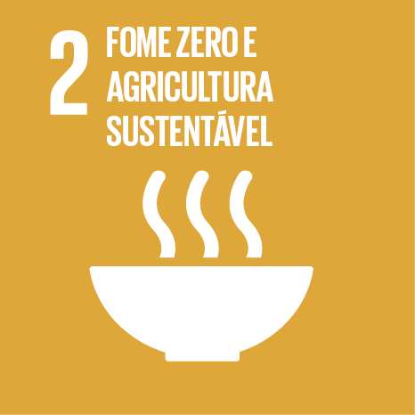
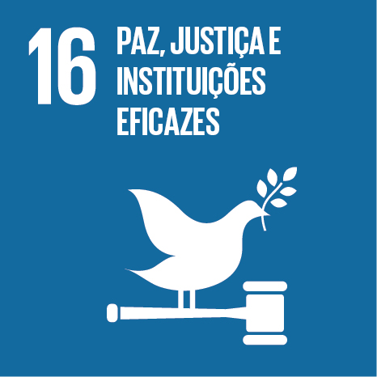

Faça o Download do Guia
Obtenha a versão completa do "Guia do Investidor da Diáspora" para aceder a todas as informações detalhadas, contactos e recursos necessários.
Então estás no lugar certo. Este site foi criado para lhe apresentar o "Guia do Investidor da Diáspora", uma ferramenta pensada para ajudar os membros da diáspora cabo-verdiana a descobrirem as melhores oportunidades de investimento em Cabo Verde. O guia reúne informações práticas e detalhadas sobre setores promissores, incentivos oferecidos pelo governo e orientações úteis para iniciar e gerir negócios com sucesso no país, contribuindo assim para o desenvolvimento económico sustentável e a criação de empregos de qualidade.
Fazer Download do GuiaCabo Verde tem um ambiente de negócios atrativo e propício ao investimento, com diversas vantagens estratégicas que fortalecem a confiança dos investidores:
Situado no cruzamento entre Europa, África e América, Cabo Verde é um ponto de conexão para comércio e negócios internacionais.
O país é reconhecido pela sua democracia consolidada, paz social e governança estável, fatores fundamentais para a segurança do investimento.
Investimentos contínuos em portos, aeroportos, estradas e redes energéticas garantem boas condições para o desenvolvimento empresarial.
A moeda nacional (Escudo Cabo-verdiano) está indexada ao Euro, proporcionando estabilidade cambial para investidores estrangeiros.
Cabo Verde possui um clima tropical moderado e estável ao longo do ano, sem registro de epidemias ou riscos significativos à saúde pública.
Políticas económicas permitem a transferência de fundos e repatriação de capitais sem restrições, favorecendo investimentos internacionais.
O país mantém um forte compromisso com o Estado de Direito, promovendo um ambiente seguro e previsível para negócios.
Cabo Verde conta com uma população jovem e capacitada, com crescente qualificação técnica e profissional, tornando-se um atrativo para setores inovadores e tecnológicos.
O Estatuto de Investidor da Diáspora é uma certificação oferecida pelo Governo de Cabo Verde para reconhecer e facilitar investimentos de cabo-verdianos residentes no exterior. Este estatuto proporciona uma série de benefícios fiscais, aduaneiros e administrativos, permitindo que a diáspora participe ativamente no desenvolvimento económico do país e aceda a condições vantajosas para iniciar e expandir negócios.
Na aquisição de imóveis para instalação de projetos.
Em contratos de financiamento e operações de crédito.
Na importação de bens e equipamentos necessários para o projeto.
O Estado comparticipa até 50% dos custos de formação no primeiro ano de atividade.
Incentivos fiscais extras poder ser aplicados a projetos em áreas de menor desenvolvimento económico, incluindo apoio logístico e finaceiro.
O processo de investimento em Cabo Verde é estruturado para ser transparente e seguro. Deslize para ver as etapas e consulte os recursos disponíveis para garantir o sucesso do seu projeto.


Passe o rato sobre os segmentos para ver os detalhes de cada Objetivo de Desenvolvimento Sustentável.

Acabar com a pobreza em todas as suas formas, em todos os lugares.

Acabar com a fome, alcançar segurança alimentar e promover a agricultura sustentável.

Assegurar vidas saudáveis e promover o bem-estar para todos, em todas as idades.

Garantir educação inclusiva, equitativa e de qualidade para todos.

Alcançar a igualdade de gênero e empoderar todas as mulheres e meninas.

Garantir disponibilidade e gestão sustentável da água e saneamento para todos.

Garantir acesso à energia confiável, sustentável e moderna para todos.

Promover o crescimento econômico sustentado, inclusivo e sustentável.

Construir infraestruturas resilientes, promover industrialização inclusiva e sustentável.

Reduzir a desigualdade dentro dos países e entre eles.

Tornar as cidades e os assentamentos humanos inclusivos, seguros e sustentáveis.

Assegurar padrões de produção e consumo sustentáveis.

Tomar medidas urgentes para combater a mudança climática e seus impactos.

Conservar e promover o uso sustentável dos oceanos, mares e recursos marinhos.

Proteger, recuperar e promover o uso sustentável dos ecossistemas terrestres.

Promover sociedades pacíficas e inclusivas para o desenvolvimento sustentável.

Fortalecer os meios de implementação e revitalizar parcerias globais.
"É preciso planear, ter muita força de vontade, determinação, coragem e ir 'com tudo'. O que nos move é o amor a esta terra que nos faz enfrentar seus desafios."
"Criei em 2010 uma empresa que hoje é a maior empresa cabo-verdiana no setor tecnológico e emprega mais de 20 pessoas de forma direta e 50-60 de forma indireta. Temos um potencial enorme de crescimento dado que operamos na área da infraestruturação do país. A mola propulsora dos negócios que criamos foi o desejo de ajudar no desenvolvimento do país onde nasci."
"Incentivo todas as pessoas a investir no país por causa do potencial existente e o largo espectro de oportunidades. Encorajo que façam o trabalho de campo, que falem com as pessoas e identifiquem as oportunidades."
Instituições públicas essenciais para facilitar o investimento da diáspora em Cabo Verde, oferecendo serviços especializados e apoio institucional.
Clique para ver mais informações
Missão: Facilitar e acreditar o investimento da diáspora em Cabo Verde, promovendo a integração dos investidores cabo-verdianos no exterior.
Website: www.mdc.gov.cv
Clique para ver mais informações
Missão: Apoiar a criação e desenvolvimento de pequenas e médias empresas.
Website: www.proempresa.cv
Clique para ver mais informações
Missão: Fornecer soluções de financiamento, especialmente através de capital de risco, para projetos inovadores.
Website: www.procapital.cv
Clique para ver mais informações
Missão: Regulação e apoio aos diversos setores económicos de Cabo Verde.
Missão: Facilitar o diálogo entre o setor privado e o governo, promovendo o crescimento empresarial.
Website: www.mdc.gov.cv
Câmaras de Comércio: www.ccb.cv (Barlavento) | www.ccs.cv (Sotavento)

Clique para ver mais informações
Missão: Um lugar para conectar Cabo Verde com a sua comunidade no mundo.
Website: www.investidordadiaspora.cv
Obtenha a versão completa do "Guia do Investidor da Diáspora" para aceder a todas as informações detalhadas, contactos e recursos necessários.